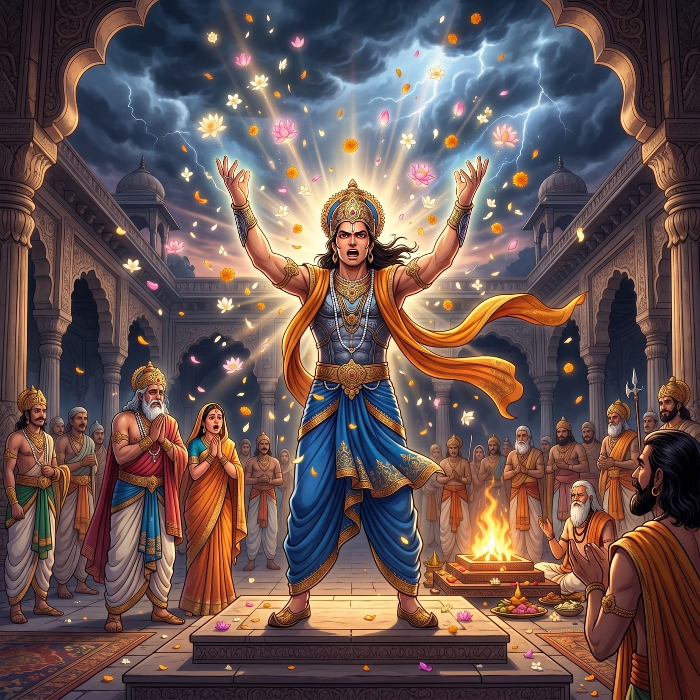
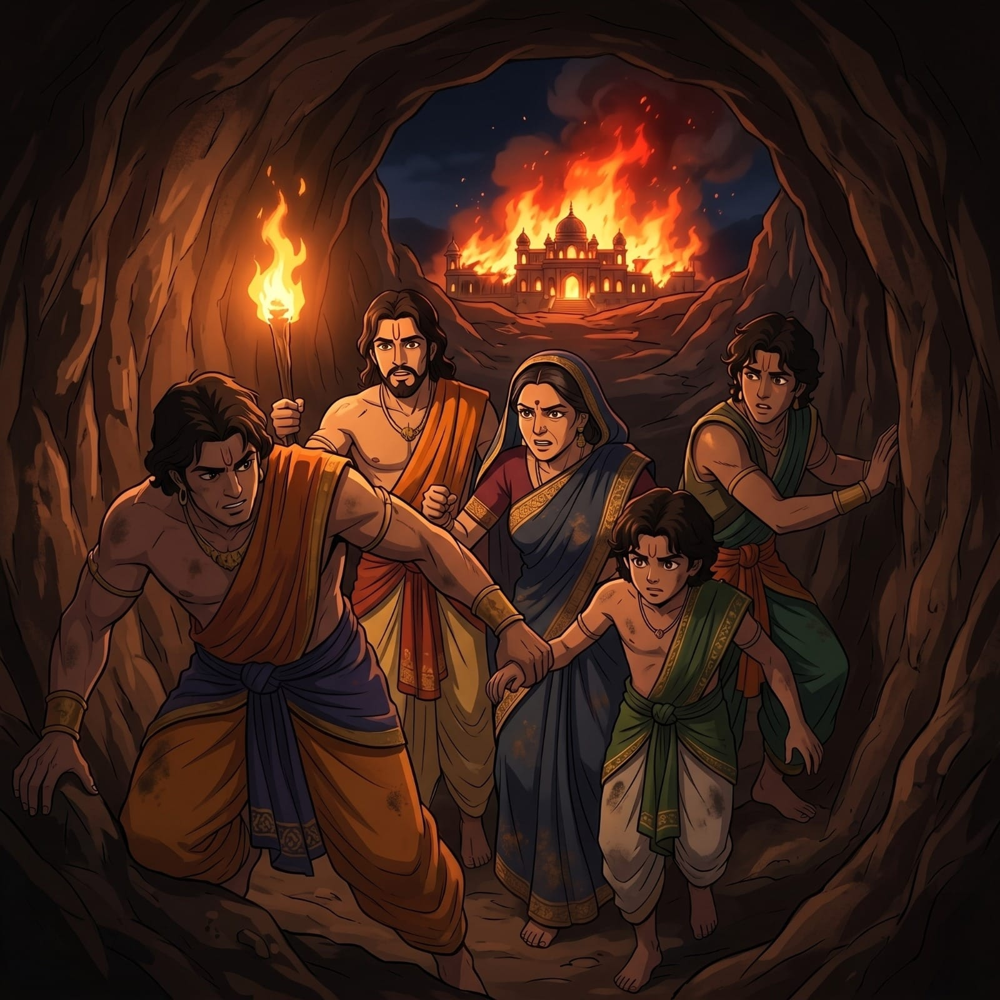
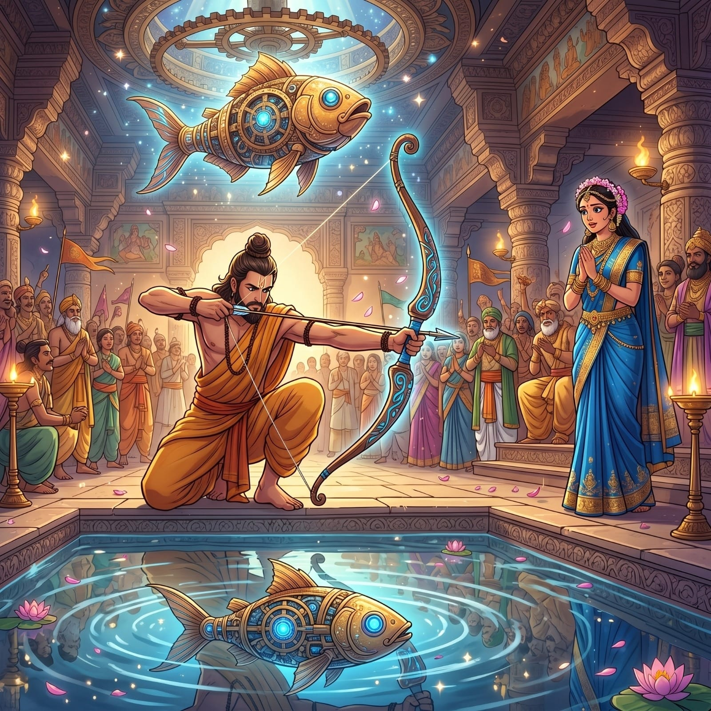
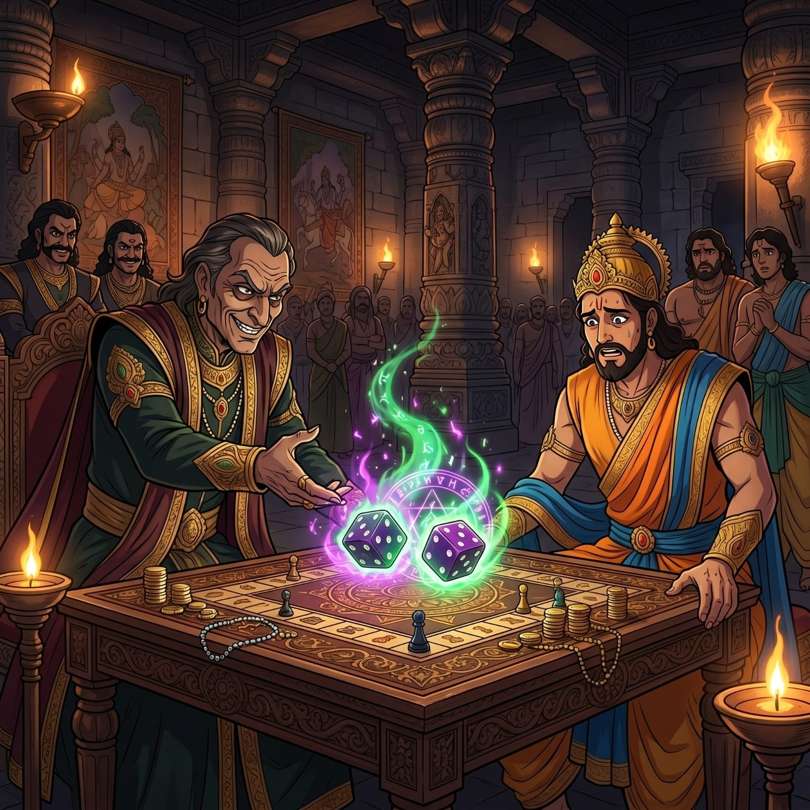
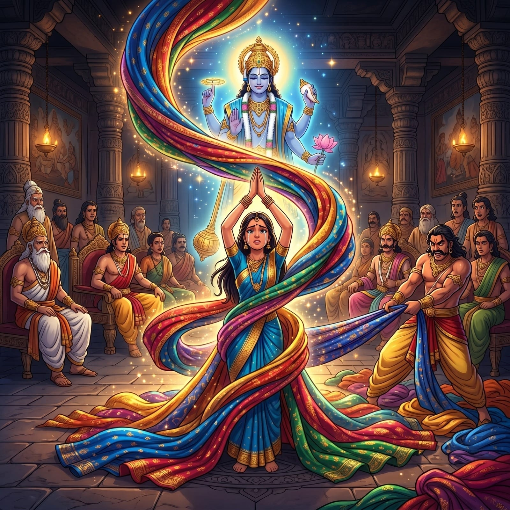
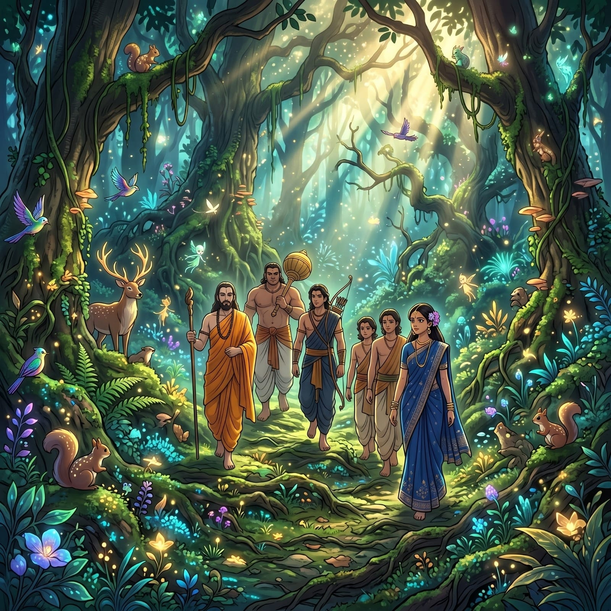
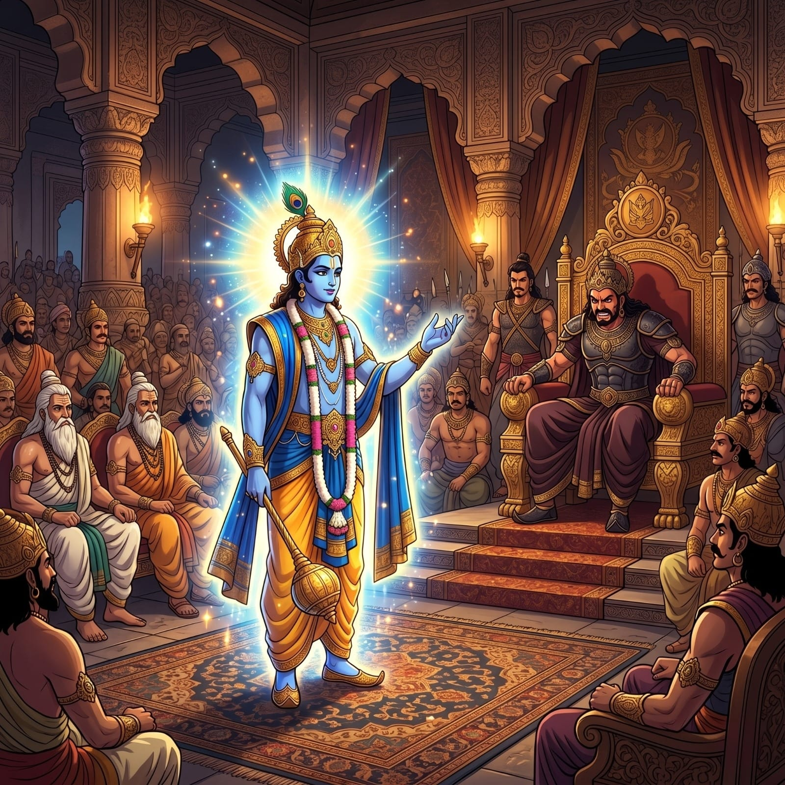
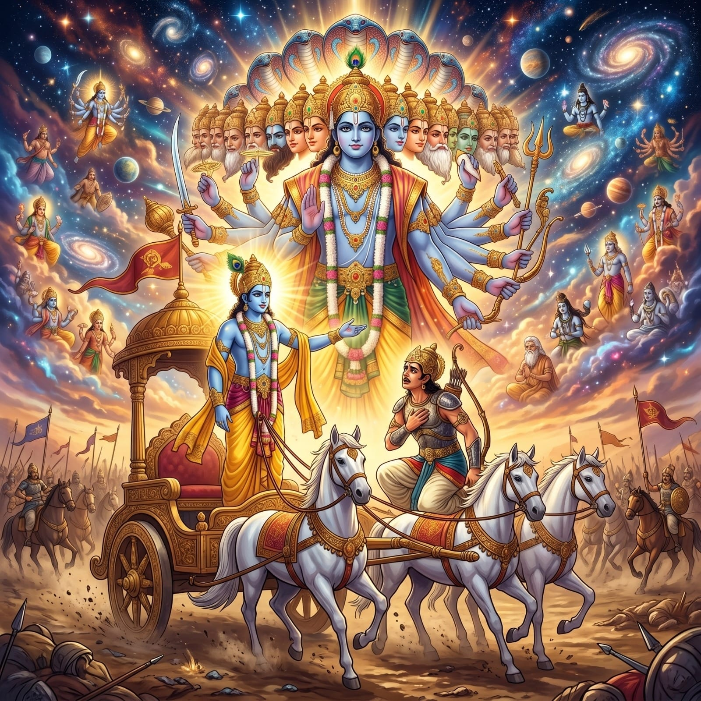
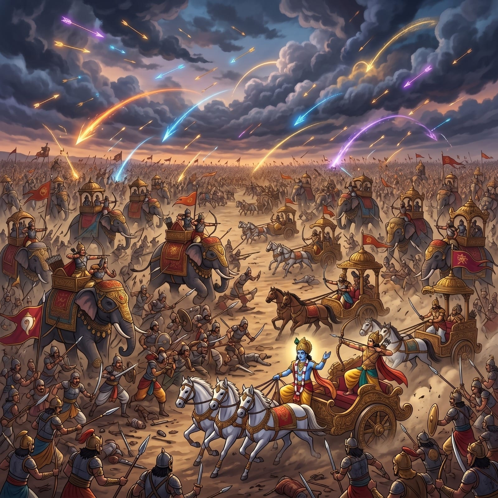
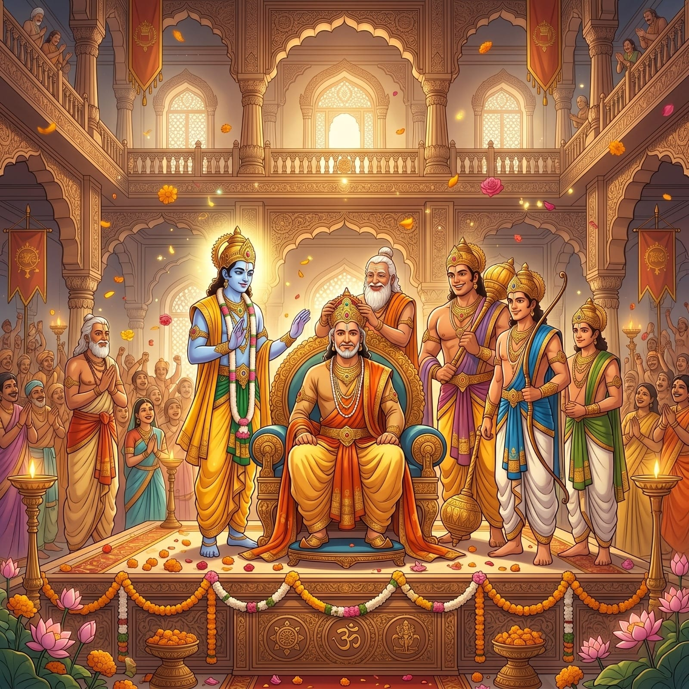

10 Important Events of Mahabharataमहाभारत की 10 प्रमुख घटनाएँ

1. Bhishma's Terrible Vow (Pratigya)१. भीष्म प्रतिज्ञा
Devavrata, the noble crown prince of Hastinapura and an incarnation of the Vasus, takes a horrific, unprecedented vow of lifelong celibacy and unconditional loyalty to whoever sits on the throne—all so that his father, King Shantanu, can marry the fisherwoman Satyavati. This supreme, unparalleled sacrifice earns him the immortal name 'Bhishma' (He of the terrible oath) and essentially defines the tragedy of the entire epic, as his rigid adherence to this vow forces him to silently witness and sometimes protect the profound injustices committed by the Kauravas.हस्तिनापुर के महान युवराज और वसुओं के अवतार देवव्रत, आजीवन ब्रह्मचर्य और सिंहासन पर बैठने वाले के प्रति बिना शर्त निष्ठा का एक भयानक, अभूतपूर्व संकल्प लेते हैं—ताकि उनके पिता, राजा शांतनु, मछुआरे की बेटी सत्यवती से विवाह कर सकें। यह सर्वोच्च, अद्वितीय त्याग उन्हें 'भीष्म' (भयानक प्रतिज्ञा वाला) का अमर नाम देता है और अनिवार्य रूप से पूरे महाकाव्य की त्रासदी को परिभाषित करता है, क्योंकि इस व्रत के प्रति उनका कठोर पालन उन्हें कौरवों द्वारा किए गए गहरे अन्यायों को चुपचाप देखने और कभी-कभी उनकी रक्षा करने के लिए मजबूर करता है।
✦ Values:✦ मूल्य: Supreme Sacrifice, Unconditional Loyalty, and the tragic cost of keeping promises at any price.सर्वोच्च त्याग, बिना शर्त निष्ठा, और किसी भी कीमत पर वचन निभाने की दुखद कीमत।

2. The Wax Palace (Lakshagriha)२. लाक्षागृह षड्यंत्र
Driven by deep-seated jealousy and insecurity, the wicked Duryodhana orchestrates a cunning assassination plot: he has a magnificent palace built entirely of highly flammable lac (wax) in Varnavata and invites the unsuspecting Pandavas to stay there. He plans to burn them alive in their sleep. However, the wise minister Vidura warns Yudhishthira in secret using a cryptic language, and the Pandavas carefully excavate a subterranean tunnel in advance. Their miraculous escape underscores the immense importance of vigilance, political foresight, and trustworthy counsel.गहरी ईर्ष्या और असुरक्षा से प्रेरित होकर, दुष्ट दुर्योधन एक चतुर हत्या की साजिश रचता है: वह वारणावत में पूरी तरह से अत्यधिक ज्वलनशील लाख (मोम) से बना एक शानदार महल बनवाता है और वहां रहने के लिए अनजान पांडवों को आमंत्रित करता है। वह उन्हें नींद में जिंदा जलाने की योजना बनाता है। हालाँकि, बुद्धिमान मंत्री विदुर गुप्त भाषा का उपयोग करके युधिष्ठिर को चेतावनी देते हैं, और पांडव पहले से ही एक भूमिगत सुरंग खोद लेते हैं। उनका चमत्कारिक रूप से बचना सतर्कता, राजनीतिक दूरदर्शिता और भरोसेमंद सलाह के अपार महत्व को रेखांकित करता है।
✦ Values:✦ मूल्य: The danger of Deceit, the necessity of Foresight, and wisdom in identifying hidden threats in time.छल का खतरा, दूरदर्शिता की आवश्यकता, और समय पर छिपे खतरों की पहचान में बुद्धिमानी।

3. Draupadi Swayamvar३. द्रौपदी स्वयंवर
King Drupada of Panchala arranges a near-impossible martial contest to find a worthy husband for his fire-born daughter, Draupadi: competitors must string an incredibly stiff bow and shoot a rapidly rotating mechanical fish in the eye while looking exclusively at its reflection in a pool of water below. Arjuna, disguised modestly as a poor Brahmin, steps forward after all kings fail. He achieves this extraordinary feat of perfect concentration (Ekagrata) and supreme archery, winning Draupadi's hand and publicly cementing the Pandavas' emergence as world-class warriors.पांचाल के राजा द्रुपद अपनी अग्नि से जन्मी बेटी, द्रौपदी के लिए एक योग्य पति खोजने के लिए लगभग असंभव मार्शल प्रतियोगिता का आयोजन करते हैं: प्रतियोगियों को एक अविश्वसनीय रूप से कठोर धनुष पर प्रत्यंचा चढ़ानी होती है और नीचे पानी के कुंड में केवल उसके प्रतिबिंब को देखते हुए तेजी से घूमती हुई यांत्रिक मछली की आंख में तीर मारना होता है। सभी राजाओं के विफल होने के बाद, एक गरीब ब्राह्मण के रूप में छद्म वेश में अर्जुन आगे आते हैं। वह पूर्ण एकाग्रता और सर्वोच्च तीरंदाजी का यह असाधारण कार्य करते हैं, द्रौपदी का हाथ जीतते हैं और सार्वजनिक रूप से विश्व स्तरीय योद्धाओं के रूप में पांडवों के उदय को मजबूत करते हैं।
✦ Values:✦ मूल्य: Extraordinary Skill, Complete Focus (Ekagrata), and that great destinies are achieved through disciplined practice.असाधारण कौशल, पूर्ण एकाग्रता (एकाग्रता), और महान नियति अनुशासित अभ्यास से प्राप्त होती है।

4. The Game of Dice (Dyut Kreeda)४. द्यूत क्रीड़ा
Yudhishthira's fatal weakness—his stubborn adherence to the royal code and an addiction to gambling—is ruthlessly exploited by the cunning Shakuni, who uses magically loaded dice. In a packed, tense assembly, bit by agonizing bit, Yudhishthira gambles away his entire kingdom, his unimaginable wealth, his brothers, himself, and finally, his own wife, Draupadi. This catastrophic game of deceit shatters family bonds, sets the entire devastating war in motion, and stands as history's most powerful lesson on the sheer destructive nature of unchecked vice and a lack of self-control.युधिष्ठिर की घातक कमजोरी—शाही संहिता का कठोरता से पालन और जुए की लत—का चालाक शकुनि द्वारा बेरहमी से फायदा उठाया जाता है, जो जादुई रूप से नियंत्रित पासे का उपयोग करता है। एक भरी हुई, तनावपूर्ण सभा में, धीरे-धीरे, युधिष्ठिर अपना पूरा राज्य, अपनी अकल्पनीय संपत्ति, अपने भाइयों, खुद को और अंततः, अपनी पत्नी, द्रौपदी को दांव पर लगा देते हैं। छल का यह विनाशकारी खेल पारिवारिक बंधनों को तोड़ देता है, पूरे विनाशकारी युद्ध को गति देता है, और अनियंत्रित बुराई और आत्म-नियंत्रण की कमी की विनाशकारी प्रकृति पर इतिहास के सबसे शक्तिशाली सबक के रूप में खड़ा है।
✦ Values:✦ मूल्य: The Consequences of Vice and Addiction, the vulnerability of over-confidence, and the need for Self-Control.व्यसन और लत के परिणाम, अति-आत्मविश्वास की कमज़ोरी, और आत्म-नियंत्रण की आवश्यकता।

5. Draupadi's Humiliation (Cheerharan)५. द्रौपदी चीरहरण
In the highly charged royal court, following the tragic game of dice, the Kaurava prince Dushasana drags Draupadi by her hair and attempts to publicly disrobe her in a truly shocking display of absolute adharma. To the utter disgrace of the Kuru dynasty, every respected elder—including Bhishma, Drona, and Dhritarashtra—watches in paralyzed silence. In her darkest hour, Lord Krishna intervenes divinely, providing an endless stream of cloth to protect her honor. Draupadi's subsequent, fierce oath of vengeance becomes the terrifying driving force behind the Pandavas' struggle.शाही दरबार में, जुए के दुखद खेल के बाद, कौरव राजकुमार दुशासन द्रौपदी को उसके बालों से घसीटता है और पूर्ण अधर्म के एक चौंकाने वाले प्रदर्शन में उसे सार्वजनिक रूप से निर्वस्त्र करने का प्रयास करता है। कुरु वंश के घोर अपमान के लिए, हर सम्मानित बुजुर्ग—जिसमें भीष्म, द्रोण और धृतराष्ट्र शामिल हैं—लकवाग्रस्त मौन में देखते हैं। उसके सबसे अंधकारमय समय में, भगवान कृष्ण दिव्य रूप से हस्तक्षेप करते हैं, उसके सम्मान की रक्षा के लिए कपड़े की एक अंतहीन धारा प्रदान करते हैं। द्रौपदी की बाद की, प्रतिशोध की भयंकर शपथ पांडवों के संघर्ष के पीछे भयानक प्रेरक शक्ति बन जाती है।
✦ Values:✦ मूल्य: The duty to uphold Justice, the sanctity of Honour, and that Divine Grace always protects the righteous.न्याय बनाए रखने का कर्तव्य, सम्मान की पवित्रता, और दिव्य कृपा हमेशा धर्मी की रक्षा करती है।

6. Thirteen Years of Exile & Incognito६. वनवास और अज्ञातवास
Bound by the harsh terms of their defeat in the dice game, the royal Pandavas are forced to endure 12 grueling years of forest exile (Vanvas) followed by 1 terrifying year living completely incognito (Agyatavas) in the kingdom of Virata. Rather than despairing, they use this transformative period to develop profound patience, massive physical endurance, and deep spiritual clarity. Arjuna travels to the heavens to acquire devastating divine weapons (Divyastras) from Lord Shiva and Indra, proving that periods of intense hardship are crucial crucibles for ultimate preparation.पासे के खेल में अपनी हार की कठोर शर्तों से बंधे, शाही पांडवों को जंगल में 12 साल के थकाऊ वनवास (वनवास) और उसके बाद विराट के राज्य में पूरी तरह से अज्ञात (अज्ञातवास) रहने वाले 1 भयानक साल को सहन करने के लिए मजबूर किया जाता है। निराश होने के बजाय, वे इस परिवर्तनकारी अवधि का उपयोग गहरा धैर्य, विशाल शारीरिक सहनशक्ति और गहरी आध्यात्मिक स्पष्टता विकसित करने के लिए करते हैं। अर्जुन भगवान शिव और इंद्र से विनाशकारी दिव्य अस्त्र (दिव्यास्त्र) प्राप्त करने के लिए स्वर्ग की यात्रा करते हैं, यह साबित करते हुए कि तीव्र कठिनाई की अवधि अंतिम तैयारी के लिए महत्वपूर्ण क्रूसिबल हैं।
✦ Values:✦ मूल्य: Resilience under adversity, Patience as strength, and using hardship as a period of deep Preparation.विपरीत परिस्थितियों में लचीलापन, शक्ति के रूप में धैर्य, और कठिनाई का उपयोग गहरी तैयारी के समय के रूप में करना।

7. Krishna's Peace Mission (Shanti Doot)७. कृष्ण का शांति प्रस्ताव
In a final, desperate diplomatic attempt to prevent a catastrophic world war, Lord Krishna Himself travels to the court of Hastinapura as a humble peace envoy. Showing immense compromise, He asks Duryodhana to grant the Pandavas merely five small villages—one for each brother—so they can live in peace. Blinded by towering, intoxicating arrogance, Duryodhana vehemently refuses to part with even "a needle-point of land" without a fight. This epic rejection slams shut the last remaining door to peace, demonstrating how unchecked ego inevitably guarantees complete destruction.एक विनाशकारी विश्व युद्ध को रोकने के लिए एक अंतिम, हताश राजनयिक प्रयास में, भगवान कृष्ण स्वयं हस्तिनापुर के दरबार में एक विनम्र शांतिदूत के रूप में यात्रा करते हैं। अत्यधिक समझौता दिखाते हुए, वह दुर्योधन से पांडवों को केवल पांच छोटे गांव—प्रत्येक भाई के लिए एक—देने के लिए कहते हैं ताकि वे शांति से रह सकें। ऊंचे, नशीले अहंकार से अंधे होकर, दुर्योधन बिना लड़े "सुई की नोक के बराबर जमीन" देने से भी दृढ़ता से इनकार कर देता है। यह महाकाव्य अस्वीकृति शांति के अंतिम शेष द्वार को बंद कर देती है, यह प्रदर्शित करती है कि कैसे अनियंत्रित अहंकार अनिवार्य रूप से पूर्ण विनाश की गारंटी देता है।
✦ Values:✦ मूल्य: The supreme importance of Diplomacy, and how Arrogance (Ahankara) destroys all possibility of peace.कूटनीति का सर्वोच्च महत्व, और कैसे अहंकार शांति की सभी संभावनाओं को नष्ट कर देता है।

8. The Bhagavad Gita — Song of God८. भगवद्गीता — ईश्वर का गीत
As the two colossal armies finally face each other on the legendary battlefield of Kurukshetra, the great warrior Arjuna is suddenly paralyzed by overwhelming grief and moral confusion at the sight of his revered teachers, beloved uncles, and cousins ready to die by his hand. In the midst of two massive armies, Lord Krishna delivers the Bhagavad Gita—a supreme, transcendent treatise that masterfully covers Karma Yoga, Jnana Yoga, Bhakti Yoga, and the concept of Nishkama Karma (desireless action). It remains arguably the most profound, life-altering philosophical dialogue in human history.जब दोनों विशाल सेनाएं अंततः कुरुक्षेत्र के पौराणिक युद्ध के मैदान में एक-दूसरे का सामना करती हैं, तो महान योद्धा अर्जुन अपने आदरणीय शिक्षकों, प्यारे चाचाओं और चचेरे भाइयों को अपने हाथों से मरने के लिए तैयार देखकर भारी दुःख और नैतिक भ्रम से अचानक लकवाग्रस्त हो जाता है। दो विशाल सेनाओं के बीच, भगवान कृष्ण भगवद्गीता—एक सर्वोच्च, पारलौकिक ग्रंथ जो कुशलतापूर्वक कर्म योग, ज्ञान योग, भक्ति योग और निष्काम कर्म (इच्छारहित क्रिया) की अवधारणा को शामिल करता है—सुनाते हैं। यह यकीनन मानव इतिहास में सबसे गहरा, जीवन बदलने वाला दार्शनिक संवाद बना हुआ है।
✦ Values:✦ मूल्य: Dharma over emotion, Nishkama Karma (desireless action), and finding inner peace amidst external chaos.भावना पर धर्म, निष्काम कर्म (निस्वार्थ क्रिया), और बाहरी अराजकता के बीच आंतरिक शांति खोजना।

9. The Kurukshetra War (18 Days)९. कुरुक्षेत्र का महायुद्ध
The devastating, blood-soaked Kurukshetra war rages for 18 brutal days, witnessing the tragic perishing of millions of soldiers. Once-invincible warriors and honorable legends like Bhishma, Drona, Karna, and the valiant youth Abhimanyu inevitably fall on the bloodied earth. Ultimately, the war is won by the Pandavas through the strategic brilliance of Lord Krishna, but it comes at a catastrophic, heartbreaking cost—almost everyone they ever loved is dead. The Mahabharata poignantly teaches that war, even an entirely just and righteous one, is a profound human tragedy that leaves behind no true, unscarred victor.विनाशकारी, खून से सना कुरुक्षेत्र का युद्ध 18 क्रूर दिनों तक चलता है, जो लाखों सैनिकों के दुखद विनाश का गवाह बनता है। भीष्म, द्रोण, कर्ण और बहादुर युवा अभिमन्यु जैसे कभी अजेय योद्धा और सम्मानीय महापुरूष खून से सनी धरती पर गिर जाते हैं। अंततः, भगवान कृष्ण की रणनीतिक प्रतिभा के माध्यम से पांडवों द्वारा युद्ध जीत लिया जाता है, लेकिन यह एक विनाशकारी, दिल दहला देने वाली कीमत पर आता है—लगभग हर कोई जिसे उन्होंने कभी प्यार किया था, मर चुका है। महाभारत मार्मिक रूप से सिखाता है कि युद्ध, यहां तक कि एक पूरी तरह से न्यायसंगत और धर्मी भी, एक गहरी मानवीय त्रासदी है जो पीछे कोई सच्चा, बेदाग विजेता नहीं छोड़ती है।
✦ Values:✦ मूल्य: The futility and destruction of War, and that even a righteous victory comes at an unbearable human cost.युद्ध की व्यर्थता और विनाश, और यह कि एक धर्मी विजय भी असहनीय मानवीय कीमत पर आती है।

10. Coronation & Yudhishthira's Rule१०. राज्याभिषेक और युधिष्ठिर का शासन
In the solemn aftermath of total annihilation, a grieving Yudhishthira is reluctantly crowned the King of Hastinapura. Guided profoundly by the final, extensive political wisdom imparted by the dying patriarch Bhishma from his harrowing bed of arrows (Shar-shaiyya), Yudhishthira goes on to establish a deeply just, compassionate, and prosperous rule spanning 36 years. Eventually, realizing their time has passed, the epic concludes with the Pandavas' final, grueling journey (Mahaprasthana) to the freezing Himalayas—a powerful, enduring reminder that absolutely all worldly power, glory, and mighty kingdoms are ultimately transient.पूर्ण विनाश के गंभीर परिणाम में, एक दुखी युधिष्ठिर को अनिच्छा से हस्तिनापुर के राजा का ताज पहनाया जाता है। बाणों की अपनी दर्दनाक शय्या (शर-शय्या) से मरते हुए कुलपति भीष्म द्वारा प्रदान की गई अंतिम, व्यापक राजनीतिक बुद्धिमत्ता द्वारा गहराई से निर्देशित, युधिष्ठिर 36 वर्षों तक चलने वाले एक अत्यंत न्यायपूर्ण, दयालु और समृद्ध शासन की स्थापना करते हैं। अंततः, यह महसूस करते हुए कि उनका समय बीत चुका है, महाकाव्य पांडवों की बर्फीले हिमालय की अंतिम, भीषण यात्रा (महाप्रस्थान) के साथ समाप्त होता है—एक शक्तिशाली, स्थायी अनुस्मारक कि पूरी तरह से सभी सांसारिक शक्ति, महिमा और शक्तिशाली राज्य अंततः क्षणभंगुर हैं।
✦ Values:✦ मूल्य: Responsibility of Power, Compassionate Governance, and that all worldly things — kingdoms included — are impermanent.शक्ति की जिम्मेदारी, करुणामय शासन, और सभी सांसारिक चीजें — राज्य सहित — अनित्य हैं।
⚔️ Why the Mahabharata Still Matters⚔️ महाभारत आज भी क्यों प्रासंगिक है
The Mahabharata does not tell you what is right — it forces you to wrestle with that question yourself. No other text in human history has explored the human condition with such unflinching honesty. Its lessons on duty, conflict, and consequence are timeless navigational tools for anyone navigating the complexity of modern life.महाभारत आपको नहीं बताती कि क्या सही है — यह आपको उस प्रश्न से स्वयं जूझने पर मजबूर करती है। मानव इतिहास में किसी अन्य ग्रंथ ने मानवीय स्थिति को इतनी निर्भीकता से नहीं समझाया है।
🧠
Strategic Thinkingरणनीतिक चिंतन
Krishna's role as a strategist and advisor is a masterclass in leadership and game theory. The Mahabharata shows that intelligence, timing, and wisdom often matter more than brute force.कृष्ण की रणनीतिकार और सलाहकार की भूमिका नेतृत्व और खेल सिद्धांत का एक मास्टरक्लास है। महाभारत दिखाती है कि बुद्धि, समय और ज्ञान अक्सर कच्ची शक्ति से अधिक मायने रखते हैं।
🪬
Moral Dilemmas & Grey Areasनैतिक दुविधाएं और ग्रे क्षेत्र
Unlike simple good vs. evil, the Mahabharata presents characters of immense moral complexity — Karna's honour, Bhishma's tragedy. It teaches us to see beyond binaries in real-life conflicts.सरल अच्छाई बनाम बुराई के विपरीत, महाभारत अत्यंत नैतिक जटिलता के पात्र प्रस्तुत करती है। यह हमें वास्तविक जीवन के संघर्षों में द्विआधारी सोच से परे देखना सिखाती है।
📿
Bhagavad Gita's Wisdomभगवद्गीता का ज्ञान
The Gita's teaching of Nishkama Karma — doing your duty without attachment to outcomes — is the ultimate antidote to anxiety, burnout, and purposelessness in modern life.गीता की निष्काम कर्म की शिक्षा — परिणामों से आसक्ति के बिना अपना कर्तव्य निभाना — आधुनिक जीवन में चिंता और उद्देश्यहीनता का अंतिम समाधान है।
🌐
Conflict Resolutionसंघर्ष समाधान
The Mahabharata exhausts every avenue of diplomacy before war. It is a cautionary tale: negotiation, empathy, and compromise must be pursued to the last breath before resorting to conflict.महाभारत युद्ध से पहले कूटनीति के हर रास्ते को आजमाती है। यह एक चेतावनी की कहानी है: संघर्ष का सहारा लेने से पहले बातचीत और समझौते को अंतिम सांस तक अपनाना चाहिए।
🔄
Consequences of Actionsकर्मों के परिणाम
Every action in the Mahabharata — Shakuni's dice, Karna's abandoned charity, Yudhishthira's gambling — returns with cosmic precision. The Karma doctrine reminds us: nothing is without consequence.महाभारत में हर कार्य — शकुनि के पासे, कर्ण का त्यागा हुआ दान — ब्रह्मांडीय सटीकता के साथ वापस आता है। कर्म सिद्धांत याद दिलाता है: कुछ भी परिणाम के बिना नहीं है।
🕊️
Cost of War & Peaceयुद्ध और शांति की कीमत
The Pandavas won the war but lost almost everyone they loved. The Mahabharata is an anti-war epic at its core — teaching that even a righteous war is a failure of human wisdom and negotiation.पांडवों ने युद्ध जीता पर अपने लगभग सभी प्रियजनों को खो दिया। महाभारत अपने मूल में एक युद्ध-विरोधी महाकाव्य है — यह सिखाती है कि एक धर्मी युद्ध भी मानवीय बुद्धि की विफलता है।
"The Mahabharata holds up a mirror to humanity and says: here is what you are capable of — both in greatness and in ruin. The choice of which path to walk is yours alone."
"महाभारत मानवता के सामने एक दर्पण रखती है और कहती है: यहाँ देखो तुम किस चीज़ के सक्षम हो — महानता में भी और विनाश में भी। किस राह पर चलना है, यह चुनाव केवल तुम्हारा है।"